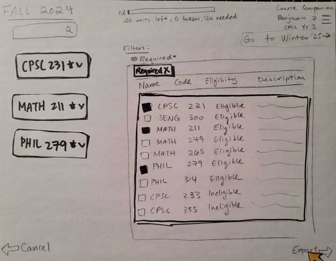

PROTOTYPING
Click on each image to read the description!



Course Companion started with a group of us, students, deciding that the existing course registration site for the University of Calgary was no longer fitting the requirements of what it was designed for. While the existing software is currently used by all students at the University of Calgary, it is painfully clear that it is in need of a major redesign. My team and I redesigned and reimaged our schedule builder using techniques taught in our HCI class to give a new and fresh approach to register for classes.
For many students, creating a schedule is an integral part of completing a degree. Keeping track of the number of credits, the requirements that have been fulfilled, the courses that are offered, and which courses are needed for graduation can be a complicated process and many students turn to their Faculty Advisors for help/guidance. The University of Calgary has launched an initiative to implement the Course Companion, a tool designed to simplify the process of building a schedule and planning courses to help lessen the wait times and load on Faculty Advisors, and to streamline and simplify the enrollment process for students.
Students are required to select courses and build schedules that incorporate classes that fulfill requirements for their degree. Each semester, students need to find the list of courses offered and check their Academic Requirements in order to check which requirements need to be fulfilled and create a schedule using that information. Students may also contact a faculty advisor to help plan their semester. This is done every semester until a student completes their degree and graduates.
Mariam is a fourth year student at the University of Calgary. She has nearly completed her bachelor's degree, and has 10 courses remaining. In order to create a schedule that will fill her requirements, Mariam opens the Academic Advisor page on her Student Centre and checks which requirements have not been fulfilled yet, and what classes can fulfill those requirements by comparing it to the classes offered during the year. She then adds the classes that do not overlap with one another and complete her requirements. She creates a Fall and Winter schedule for the upcoming year that fulfill her requirements for graduation.
Mariam is a typical user of the system. There are always students that are graduating each year, so this is infrequent for most users, but a routine task and important task regardless. Being at the end of your degree is when it is most important that you have all of your qualifications to graduate.
Olivia is a third year student at the University of Calgary and is about to start the course registration process for the next Winter semester. To build her class schedule, Olivia starts by reviewing her required courses and goes to add ones she has not done yet into the schedule builder. Then, she checks the time of each class and tutorial to make sure there are no conflicts and makes any necessary adjustments. However, when she tries to enter a class with a full waitlist, she has to manually check if the waitlist is open every few hours. Eventually, she is able to get onto the waitlist and finalizes her schedule.
Olivia is a typical user of the system. Her task is routine and important. In a student’s third year, they are typically planning for their last two remaining years. Many students are not aware that there are a limited number of 200 level courses they need to take, and should be made aware of this during their last few years in their degree, so that they can graduate on time.
Benjamin is a recent graduate from the United States who just moved to Calgary to pursue an undergraduate in Computer Science at the University of Calgary. He goes to the University’s online schedule builder and starts planning his first Fall semester. To figure out which classes he needs to take, Benjamin finds a list of required classes for his major. He looks at the requirements for the first year of the degree, and he notes CPSC 231. He checks if there are any prerequisites and if it’s being offered in Fall. Once he confirms that he is eligible, he adds it to his schedule. He repeats the same steps for two more courses. Eventually he is able to finalize his schedule with CPSC 231, MATH 211, and PHIL 279.
Benjamin is a typical user performing a routine and important task. New students come in every year, and with that they are the most important to educate with the schedule planning system. Many questions they ask are very simple, and can easily be answered if the information was easier to access.
Wayne is in his 3rd year pursuing a Business degree, with a minor in Computer Science. He plans his upcoming year for both Fall and Winter. He begins by planning for Fall. He finds a course calendar that outlines what he needs for each Business concentration, along with descriptions of each course contained in them. He already knows that he needs to take CPSC 319, so he immediately adds it to his schedule. He then looks for courses to take in Business Technology Management, and notes BTMA 331 and BTMA 333. After reading the descriptions, he decides to take BTMA 331. Afterwards, he looks for Computer Science classes, and remembers that PHIL 279 was not offered in the Winter last year, so tries to see if he can take it this upcoming year. He finds that it is being offered in the Fall and adds it to his schedule. He checks to see what other courses interest him in Computer Science, and adds CPSC 329 to his schedule as well. Afterwards, he finalizes his schedule and enrolls.
Wayne is not the typical user, but his task is infrequent and important. Business majors are required to declare a concentration by graduation. In addition, most students are not taking minors but these additional courses must be considered as well.
Azhar, a fourth-year student at the University of Calgary, is currently enrolled in the Faculty of Science and pursuing a Bachelor of Science degree in Computer Science. During his course planning for the upcoming term, he became interested in two courses offered by the Software Engineering and Computer Science departments, respectively. The courses in question were SENG 511, offered by the Software Engineering department, and CPSC 599, a special topic course offered by the Computer Science department. When attempting to enroll in these courses using the Schedule Builder, Azhar encountered a warning that indicated that he needed to obtain permission from an academic advisor. As a result, he sent an email to the Faculty of Science Student Centre to request an appointment with an academic advisor. After scheduling an appointment and meeting with the academic advisor, Azhar received the necessary permission to enroll in the courses of his interest.
Azhar is a typical user, along with performing an infrequent but important task. Some Software Engineering courses require Computer Science students to manually request permission for enrollment. It is important that students are made aware of this information as soon as possible. As a result, Azhar illustrates many qualities of our expected user.
Anna is a first year Natural Science major at the University of Calgary. She has recently been accepted to transfer into a Combined Degree of Biology and Computer Science for Fall 2023. In order to create a schedule for the coming year that will fulfill requirements for the degree she transferred into, she searches for the first-year degree guide for both the Computer Science and Biology programs and looks at the suggested courses for each program. She creates a schedule by using that as a guide for selecting courses, adding them into the Schedule Builder, and checking each class for any potential time conflicts. She creates a schedule for the upcoming year that fulfills her requirements for the upcoming year.
Anna is another typical user of the system, with the only caveat being that she has transferred into a combined degree. Hence, her task is infrequent but important. This means that her required courses and graduation requirements have been changed, so she will need to adjust which courses she plans for in the future, which is not a routine that most students must go through.
Each task example was collected through interviews of typical users of the Schedule Builder system. Some were recorded sessions, others were live demos of putting the user in a hypothetical situation, and watching them plan their courses. Tasks were validated by asking the users after the task descriptions were formed, and confirming if these were faithful to their experiences.
The system we designed is a course planner that simplifies the process of creating a schedule and planning classes by providing users with a way to select courses based on their requirements. Instead of individually searching for a class that fulfills a credit, the system takes into consideration each student's major and progress to show users courses that they should take. Users are able to search for specific classes, and see which requirements a class would fill and see how their planned schedule would impact their progress to degree completion.
An element of our system that works well is the ability for users to search for specific classes. The search can be utilized to find courses based on the semester they are offered, the level of the course and the title of the course. This feature allows users to easily find a specific class or classes with certain criteria to add to their schedule, such as searching for 500 level CPSC classes. The filter feature on our system allows users to filter the suggested courses based on various conditions such as major field requirements, open options, and eligible courses among others, which simplifies the process of finding and selecting a course to fulfill a specific requirement. The filter simplifies the process by only showing users courses that they want to see, which prevents the users from needing to sift through irrelevant courses to find what they are looking for. Our system is designed such that users can create a schedule and plan for multiple semesters at once. This feature was incorporated into our design plan, as it is a frequently occurring task and more often than not students are planning for multiple semesters. The ability to plan for multiple semesters at once reduces confusion, as users do not need to shift across multiple pages to plan their courses for the year. Users are able to view their progress in their degree using the progress bar. Users can also see what their proposed schedule would mean for their progress, which allows users to plan their courses accordingly. This feature also simplifies the process because users do not need to go back and forth between multiple pages to add courses and check their requirements.
A few improvements that can be done to our design is to add a degree requirements checklist, that checks off classes that have already been taken. This makes it clear to users which classes they have taken and which requirements have been fulfilled. Another improvement is to include highlights in the help tutorial that starts when a user clicks the help button. Highlighting each section that the help tutorial is explaining can add some clarity for users.
The identified users for the course planning system are current and incoming students. Overall, the system would work well for identified users of the system and the tasks because users would be able to complete tasks like creating a schedule and searching for classes that fill requirements in a way that's simpler by utilizing features like the filter and the degree progress bar. The system we designed takes each student's degree, and progression into account and provides a planner where students can easily access that information while creating their schedule. The system also provides real time updates on how each proposed schedule would impact a students progression -which is reflected in the progress bar- and keeps students informed on their progress and doesn’t require them to utilize multiple resources to select classes that fulfill degree requirements. The task identified through task walkthroughs and examples included looking for courses that fulfill a requirement, creating a schedule in conjunction with other resources to ensure that requirements are filled, which our system covers.
A strong design element of our system is the degree progress bar. This progress bar allows users to easily access their degree requirements and see how far along in their degree they are. It also shows users how many credits of each requirement they have filled, and how many they have left, which users can utilize to make informed decisions about their schedules such that they fulfill any missing requirements. The search where users can see all courses that match the search, and select which ones they want. The simplicity of the design makes it so users are not overwhelmed with information, and can simply filter courses and choose what they want. The design also allows for a simple way to add and remove classes and see any ineligibilities as soon as someone tries to add a course they can’t enroll in. This all makes planning courses a simpler task.
Our system design has a few weaknesses, one being that users are not able to see the time that each class is offered. This can make it difficult to plan courses for specific times or to see if any courses have time conflicts. Another weakness is that users can’t see course details like what time the course is offered, the number of seats, if the course is open or at capacity or offers a waitlist. This can also be an obstacle as users may create an entire schedule and only once it's been exported to schedule builder will they notice these issues, causing them to rethink their course choices.That system also can not handle block week courses currently. Lastly, users are not able to view the form in which the class is being delivered, whether it is online or in-person which for some users can be an important factor in whether they want to register for the class.